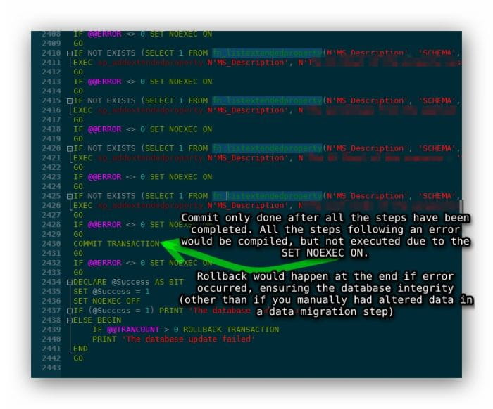

SET NOEXEC is my new friend
Have never really played around with the option: SET NOEXEC ON
Turns out this can be a helpful way to validate larger batch scripts before actually making changes, to ensure compilation happens. If you choose, you can verify syntax by "parsing" in SSMS. However, this doesn't compile. Compilation checks more than your syntax. It actually validates the objects referenced exist.
The execution of statements in SQL Server has two phases: compilation and execution. This setting is useful for having SQL Server validate the syntax and object names in Transact-SQL code when executing. It is also useful for debugging statements that would generally be part of a larger batch of statements. MSDN #188394 I previously had done this basic verification by running an estimated execution plan. This had the benefit of finding compilation errors as well. However, with large batch jobs it could be problematic and slow, as it had to process and return all execution plans for the statements, which I didn't need. Having this function can be a nice resource for validation of scripts before running, without the overhead of estimated execution plans. Additionally, you can handle transactional rollbacks and prevent cascading problems from happening when running a batch that changes your database by setting
NOEXEC ONwhen encountering an error. Red Gate SQL Compare does this elegantly: 